iris = load_iris()
X = iris.data[:, 2:]
y = iris.target
tree_clf = DecisionTreeClassifier(
max_depth=2,
random_state=42
)
_ = tree_clf.fit(X, y)6 Chapter – Decision Trees
6.1 Introduction
Decision Trees are supervised learning models that can perform classification, regression, and multioutput tasks. They are intuitive, flexible, and capable of learning nonlinear relationships and complex interactions between predictors (Breiman et al. 1984).
A Decision Tree partitions the feature space recursively. At each internal node, the algorithm asks a question of the form
\[ x_j \leq t, \]
where \(x_j\) is one predictor and \(t\) is a threshold. Each answer sends the observation to the left or right branch until it reaches a terminal node, called a leaf. The prediction associated with that leaf is then returned.
Decision Trees are also the basic building blocks of ensemble methods such as Random Forests, Extra Trees, Gradient Boosting, XGBoost, and LightGBM.
NoteLearning objectives
After completing this chapter, you should be able to:
- explain how a Decision Tree recursively partitions the feature space;
- interpret the structure and output of a classification tree;
- calculate and interpret Gini impurity and entropy;
- explain the Classification and Regression Tree algorithm;
- interpret class probabilities produced by a tree;
- recognize why unrestricted trees tend to overfit;
- regularize a tree using structural hyperparameters;
- fit and interpret regression trees;
- explain cost-complexity pruning;
- distinguish Decision Trees from Extra Trees;
- compare tree complexity using cross-validation and reserve a test set for one final evaluation;
- interpret impurity-based and held-out permutation importance cautiously;
- identify the main advantages and limitations of tree-based models.
6.2 Training a classification tree
We begin with the Iris dataset. To make the tree easy to visualize, we use only petal length and petal width.
Unlike many distance-based models, Decision Trees do not require feature scaling or centering. Their splits depend only on the ordering of predictor values and not on their units.
TipMinimal preprocessing
Decision Trees generally do not require standardization. However, missing values, categorical variables, leakage, and inappropriate train-test splitting still require careful treatment.
Scikit-Learn trees require numeric input, so nominal predictors normally need an encoding such as one-hot encoding; integer codes can create an unjustified ordering. Support for missing numerical values depends on the estimator and splitting criterion. An explicit imputation policy is often easier to audit, and a missingness indicator can be useful when absence itself is informative. Put encoders, imputers, and any feature selection in a ColumnTransformer/Pipeline, then cross-validate the complete pipeline. Fitting preprocessing before the split or on all folds leaks validation information (Scikit-learn developers 2025).
6.3 Visualizing the tree with Python
Scikit-Learn can draw the fitted tree directly with plot_tree(), so Graphviz is not required.
Figure 6.1 shows both the learned rules and the training mass reaching each node.
Show code
fig, ax = plt.subplots(figsize=(11, 7))
plot_tree(
tree_clf,
feature_names=iris.feature_names[2:],
class_names=iris.target_names,
rounded=True,
filled=True,
impurity=True,
proportion=False,
ax=ax
)
plt.show()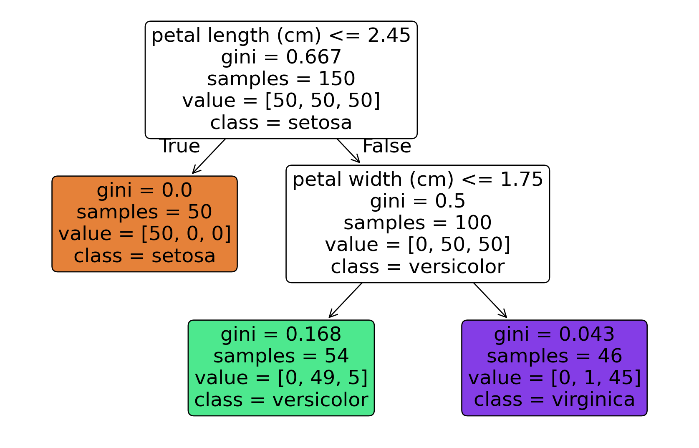
Each node contains several pieces of information:
- the splitting rule;
- the impurity measure;
- the number of training observations in the node;
- the class counts;
- the predicted class.
The root node is at depth 0. Internal nodes contain splitting rules, while leaf nodes return final predictions.
6.4 How the tree makes predictions
Suppose an Iris flower has a petal length smaller than the root threshold. The observation moves to the left branch. If that branch ends in a leaf dominated entirely by Iris setosa, the predicted class is setosa.
If the petal length is larger than the root threshold, the observation moves to the right branch. A second question, perhaps involving petal width, then separates versicolor from virginica.
This prediction process is deterministic. Every observation follows exactly one path from the root to a leaf.
new_flowers = np.array([
[1.5, 0.3],
[5.0, 1.5],
[6.0, 2.2]
])
tree_clf.predict(new_flowers)array([0, 1, 2])6.5 Samples, values, and predicted classes
The samples entry reports how many training observations reach the node. If sample_weight or class weights are used, weighted_n_node_samples is the corresponding sample mass.
The value entry contains class mass: ordinary counts when all observations have weight one, and weighted counts otherwise. For example,
value = [0, 49, 5]means that the node contains:
- 0 observations from class 0;
- 49 observations from class 1;
- 5 observations from class 2.
The leaf probability for class \(k\) is its weighted class mass divided by the total weighted mass in that leaf. The predicted class has the largest probability; ties follow the estimator’s encoded class order rather than expressing genuine certainty. Thus a hard prediction hides both leaf size and ambiguity.
6.6 Gini impurity
Scikit-Learn uses Gini impurity by default for classification trees.
For node \(i\), the Gini impurity is
\[ G_i = 1-\sum_{k=1}^{K}p_{i,k}^{\,2}, \]
where \(p_{i,k}\) is the proportion of weighted sample mass from class \(k\) in node \(i\) (an ordinary proportion when all weights equal one).
A node is pure when all observations belong to the same class. In that case, one class proportion is 1 and all others are 0, so
\[ G_i = 0. \]
For a node with counts
\[ [0,49,5], \]
the impurity is
\[ G_i = 1 - \left(\frac{0}{54}\right)^2 - \left(\frac{49}{54}\right)^2 - \left(\frac{5}{54}\right)^2 \approx 0.168. \]
counts = np.array([0, 49, 5])
probabilities = counts / counts.sum()
gini = 1 - np.sum(probabilities ** 2)
gininp.float64(0.16803840877914955)A lower impurity indicates that the node contains a more homogeneous set of classes.
6.7 Decision boundaries
A Decision Tree creates axis-aligned partitions because every split involves one predictor at a time.
The axis-aligned regions learned from Iris are visible in Figure 6.2.
Show code
fig, ax = plt.subplots(figsize=(8, 6))
DecisionBoundaryDisplay.from_estimator(
tree_clf,
X,
response_method="predict",
plot_method="pcolormesh",
alpha=0.25,
ax=ax
)
for class_id, marker in zip(np.unique(y), ["o", "s", "^"]):
ax.scatter(
X[y == class_id, 0],
X[y == class_id, 1],
marker=marker,
label=iris.target_names[class_id]
)
ax.set_xlabel("Petal length (cm)")
ax.set_ylabel("Petal width (cm)")
ax.legend()
plt.show()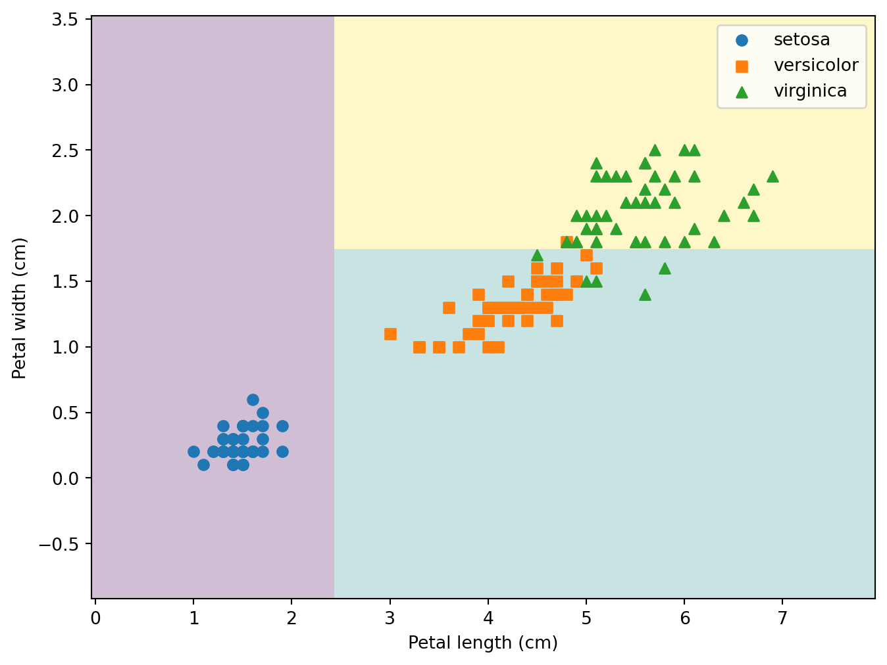
The first split divides the plane vertically because it uses petal length. A later split divides one region horizontally because it uses petal width.
Increasing max_depth allows the tree to create more rectangular regions.
Figure 6.3 compares three depth limits. Depth is the number of edges on the longest root-to-leaf path: a root-only tree has depth 0, so max_depth=2 permits at most two splits along any path (three node levels).
Show code
depths = [1, 2, 4]
fig, axes = plt.subplots(1, 3, figsize=(12, 4))
for depth, ax in zip(depths, axes):
model = DecisionTreeClassifier(
max_depth=depth,
random_state=42
)
_ = model.fit(X, y)
DecisionBoundaryDisplay.from_estimator(
model,
X,
response_method="predict",
plot_method="pcolormesh",
alpha=0.25,
ax=ax
)
for class_id, marker in zip(np.unique(y), ["o", "s", "^"]):
ax.scatter(
X[y == class_id, 0],
X[y == class_id, 1],
marker=marker
)
ax.set_title(f"max_depth = {depth}")
ax.set_xlabel("Petal length")
ax.set_ylabel("Petal width")
plt.tight_layout()
plt.show()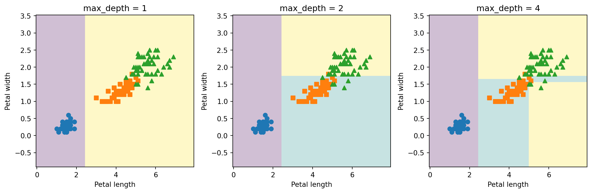
6.8 Estimating class probabilities
A classification tree can estimate class probabilities. It first locates the leaf containing the new observation and then computes the relative frequency of every class in that leaf.
For a flower with petal length 5 cm and petal width 1.5 cm:
tree_clf.predict_proba([[5, 1.5]])array([[0. , 0.90740741, 0.09259259]])The corresponding class prediction is:
tree_clf.predict([[5, 1.5]])array([1])The class with the largest estimated probability becomes the predicted class.
ImportantPiecewise-constant probabilities
All observations that fall in the same leaf receive exactly the same probability vector. Decision Tree probabilities may therefore be poorly calibrated, especially when leaves contain few observations.
6.9 The CART training algorithm
Scikit-Learn uses the Classification and Regression Tree algorithm (Breiman et al. 1984; Scikit-learn developers 2025). CART grows binary trees: every split produces exactly two child nodes.
At a given node, the algorithm searches over candidate features \(j\) and thresholds \(t_j\). For classification, it selects the split minimizing
\[ J(j,t_j) = \frac{W_{\text{left}}}{W} I_{\text{left}} + \frac{W_{\text{right}}}{W} I_{\text{right}}, \]
where:
- \(W\) is the sample mass in the current node;
- \(W_{\text{left}}\) and \(W_{\text{right}}\) are the child-node masses (counts when every weight is one);
- \(I_{\text{left}}\) and \(I_{\text{right}}\) are their impurities.
The algorithm repeats this process recursively until a stopping condition is reached.
Typical stopping conditions include:
- the maximum depth has been reached;
- the node contains too few observations to split;
- no candidate split provides sufficient improvement;
- a structural restriction prevents further growth.
CART uses a greedy strategy. It chooses the best split available at the current node without considering whether another split might produce a globally better tree later.
NoteGreedy optimization
The fitted tree is not guaranteed to be the globally optimal tree. Finding the smallest optimal tree is computationally difficult, so practical algorithms rely on greedy recursive partitioning.
6.10 Gini impurity versus entropy
Entropy is another common classification criterion:
\[ H_i = - \sum_{k=1}^{K} p_{i,k}\log_2(p_{i,k}), \]
where terms with \(p_{i,k}=0\) are omitted.
Entropy is zero for a pure node. It increases as the class distribution becomes more mixed.
Show code
p = np.linspace(0.001, 0.999, 500)
gini_curve = 1 - p**2 - (1 - p)**2
entropy_curve = -p * np.log2(p) - (1 - p) * np.log2(1 - p)
fig, ax = plt.subplots(figsize=(8, 5))
ax.plot(p, gini_curve, label="Gini impurity")
ax.plot(p, entropy_curve, label="Entropy")
ax.set_xlabel("Proportion of class 1")
ax.set_ylabel("Impurity")
ax.legend()
plt.show()
As Figure 6.4 illustrates, both criteria favor pure nodes. In practice, Gini impurity and entropy often produce similar trees. Gini is somewhat faster to compute and is a reasonable default. Entropy sometimes creates slightly more balanced splits, but the difference is usually modest compared with the effects of regularization and validation.
gini_tree = DecisionTreeClassifier(
criterion="gini",
max_depth=3,
random_state=42
)
entropy_tree = DecisionTreeClassifier(
criterion="entropy",
max_depth=3,
random_state=42
)
_ = gini_tree.fit(X, y)
_ = entropy_tree.fit(X, y)
gini_tree.get_n_leaves(), entropy_tree.get_n_leaves()(np.int64(5), np.int64(5))6.11 Why Decision Trees overfit
An unrestricted Decision Tree can continue partitioning until leaves are nearly pure. This frequently produces:
- very high training accuracy;
- low bias;
- high variance;
- unstable decision boundaries;
- poor performance on unseen data.
The following example uses a noisy moons dataset.
X_moons, y_moons = make_moons(
n_samples=500,
noise=0.30,
random_state=42
)
X_train, X_test, y_train, y_test = train_test_split(
X_moons,
y_moons,
test_size=0.30,
stratify=y_moons,
random_state=42
)The test partition is now locked: it is not used to draw a figure, choose complexity, or compare candidates. We first fit an unrestricted candidate for Figure 6.5 and then compare candidates using only training-fold scores.
Show code
unregularized_tree = DecisionTreeClassifier(random_state=42)
_ = unregularized_tree.fit(X_train, y_train)
fig, ax = plt.subplots(figsize=(8, 6))
DecisionBoundaryDisplay.from_estimator(
unregularized_tree,
X_train,
response_method="predict",
plot_method="pcolormesh",
alpha=0.25,
ax=ax
)
ax.scatter(
X_train[y_train == 0, 0],
X_train[y_train == 0, 1],
marker="o",
label="Class 0"
)
ax.scatter(
X_train[y_train == 1, 0],
X_train[y_train == 1, 1],
marker="s",
label="Class 1"
)
ax.set_xlabel("$x_1$")
ax.set_ylabel("$x_2$")
ax.legend()
plt.show()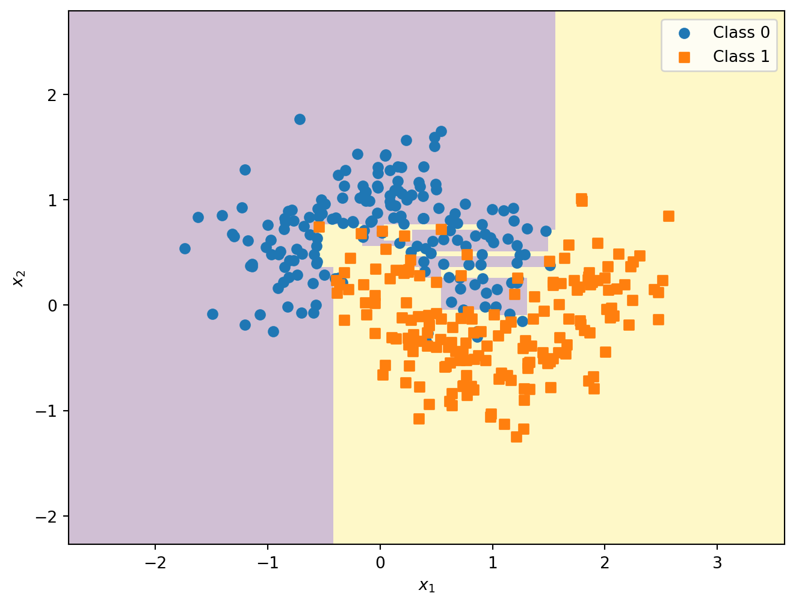
An unrestricted tree can attain perfect or near-perfect training accuracy, but that fact alone cannot estimate performance on new data. The training-to-cross-validation gap below is the relevant overfitting diagnostic during model development.
6.12 Regularization hyperparameters
Decision Trees are nonparametric models: their complexity is not fixed before training. Regularization restricts the tree-growing process.
| Hyperparameter | What it controls | Effect of stronger restriction |
|---|---|---|
max_depth |
Maximum root-to-leaf depth, measured in edges | Produces a shallower tree |
min_samples_split |
Minimum observations required to split a node | Prevents splitting small nodes |
min_samples_leaf |
Minimum observations required in every leaf | Produces larger, more stable leaves |
min_weight_fraction_leaf |
Minimum weighted fraction required in a leaf | Useful with observation weights |
max_leaf_nodes |
Maximum number of terminal nodes | Directly limits tree size |
max_features |
Number of predictors considered at each split | Adds randomness; its effect on a single tree’s bias and variance is data-dependent |
min_impurity_decrease |
Minimum required impurity reduction | Rejects weak splits |
ccp_alpha |
Cost-complexity pruning strength | Removes branches after growth |
A regularized model might be:
regularized_tree = DecisionTreeClassifier(
max_depth=5,
min_samples_leaf=10,
random_state=42
)
_ = regularized_tree.fit(X_train, y_train)Figure 6.6 shows the smoother boundary produced by the prespecified restrictions.
Show code
fig, ax = plt.subplots(figsize=(8, 6))
DecisionBoundaryDisplay.from_estimator(
regularized_tree,
X_train,
response_method="predict",
plot_method="pcolormesh",
alpha=0.25,
ax=ax
)
ax.scatter(
X_train[y_train == 0, 0],
X_train[y_train == 0, 1],
marker="o"
)
ax.scatter(
X_train[y_train == 1, 0],
X_train[y_train == 1, 1],
marker="s"
)
ax.set_xlabel("$x_1$")
ax.set_ylabel("$x_2$")
plt.show()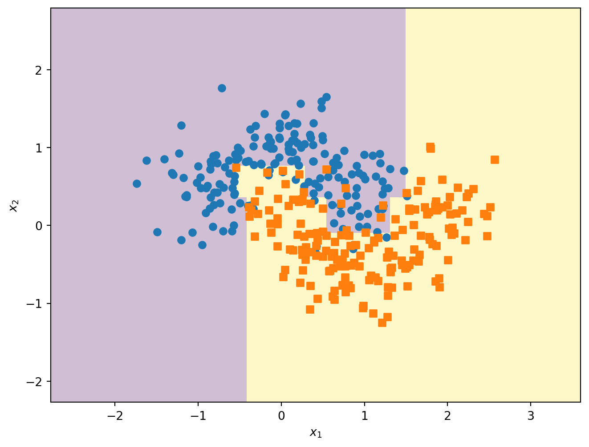
cv = StratifiedKFold(n_splits=5, shuffle=True, random_state=42)
candidates = {
"unrestricted": DecisionTreeClassifier(random_state=42),
"regularized": DecisionTreeClassifier(
max_depth=5,
min_samples_leaf=10,
random_state=42
)
}
classification_cv = {}
for name, candidate in candidates.items():
scores = cross_validate(
candidate,
X_train,
y_train,
cv=cv,
scoring="accuracy",
return_train_score=True,
n_jobs=1
)
classification_cv[name] = {
"train_accuracy": scores["train_score"].mean(),
"cv_accuracy": scores["test_score"].mean(),
"cv_sd": scores["test_score"].std()
}
{
name: {metric: round(value, 3) for metric, value in result.items()}
for name, result in classification_cv.items()
}{'unrestricted': {'train_accuracy': np.float64(1.0),
'cv_accuracy': np.float64(0.857),
'cv_sd': np.float64(0.013)},
'regularized': {'train_accuracy': np.float64(0.932),
'cv_accuracy': np.float64(0.869),
'cv_sd': np.float64(0.025)}}Regularization may reduce training accuracy while improving cross-validated generalization. We select the candidate with the highest mean fold accuracy, refit that specification on all training observations, and only then unlock the test partition.
selected_name = max(
classification_cv,
key=lambda name: classification_cv[name]["cv_accuracy"]
)
final_tree = clone(candidates[selected_name])
_ = final_tree.fit(X_train, y_train)
final_test_accuracy = accuracy_score(y_test, final_tree.predict(X_test))
{"selected_model": selected_name, "final_test_accuracy": round(final_test_accuracy, 3)}{'selected_model': 'regularized', 'final_test_accuracy': 0.893}This is the chapter’s single final test result. It estimates the performance of the completed selection procedure; it must not be used to revise the selected tree.
6.13 Pre-pruning and post-pruning
Tree complexity can be controlled in two conceptually different ways.
6.13.1 Pre-pruning
Pre-pruning stops the tree while it is being grown. Hyperparameters such as max_depth, min_samples_leaf, and min_impurity_decrease are pre-pruning controls.
6.13.2 Post-pruning
Post-pruning first grows a larger tree and then removes weak branches.
Scikit-Learn implements minimal cost-complexity pruning through ccp_alpha. The objective balances impurity and the number of terminal nodes:
\[ R_{\alpha}(T) = R(T)+\alpha|\widetilde{T}|, \]
where:
- \(R(T)=\sum_{\ell\in\widetilde T}(W_\ell/W_{\mathrm{root}})I(\ell)\) is the sum of leaf impurities weighted by each leaf’s fraction of the root sample mass;
- \(|\widetilde{T}|\) is the number of leaves;
- \(\alpha\) controls the penalty on tree size.
Larger values of ccp_alpha produce smaller trees.
full_tree = DecisionTreeClassifier(
random_state=42
)
path = full_tree.cost_complexity_pruning_path(
X_train,
y_train
)
ccp_alphas = path.ccp_alphas
impurities = path.impuritiesShow code
fig, ax = plt.subplots(figsize=(8, 5))
ax.plot(ccp_alphas[:-1], impurities[:-1], marker="o")
ax.set_xlabel("Effective alpha")
ax.set_ylabel("Total leaf impurity")
plt.show()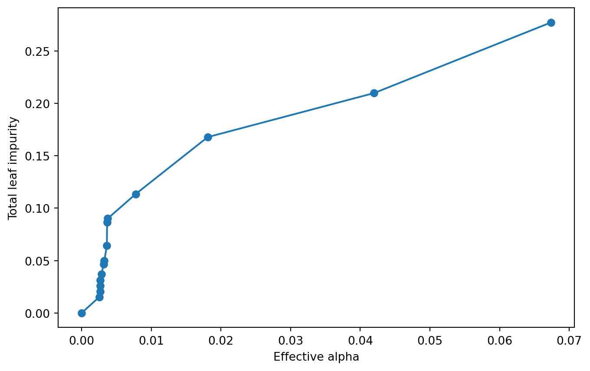
Figure 6.7 plots the weighted leaf risk along the effective-alpha path.
pruned_trees = []
for alpha in ccp_alphas:
model = DecisionTreeClassifier(
random_state=42,
ccp_alpha=alpha
)
_ = model.fit(X_train, y_train)
pruned_trees.append(model)
node_counts = [model.tree_.node_count for model in pruned_trees]
tree_depths = [model.tree_.max_depth for model in pruned_trees]Show code
fig, ax = plt.subplots(figsize=(8, 5))
ax.plot(ccp_alphas, node_counts, marker="o", label="Number of nodes")
ax.plot(ccp_alphas, tree_depths, marker="s", label="Tree depth")
ax.set_xlabel("ccp_alpha")
ax.legend()
plt.show()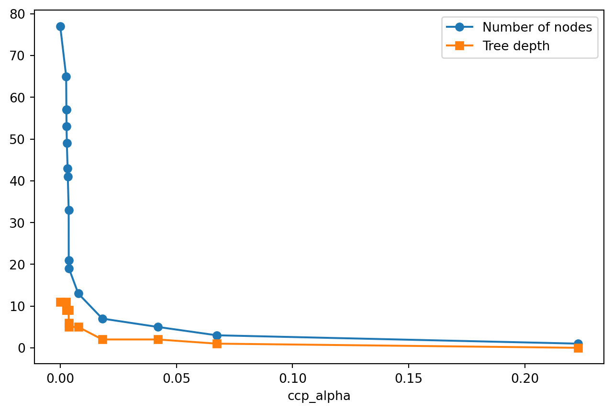
As Figure 6.8 shows, increasing ccp_alpha generally reduces both node count and depth. The pruning parameter should be selected using validation or cross-validation, not the test set.
6.14 Feature importance
A fitted Decision Tree exposes mean decrease in impurity (MDI) through feature_importances_. At a split node \(t\), let \(W_t\), \(W_L\), and \(W_R\) denote weighted sample mass and let \(I(\cdot)\) denote impurity. The global contribution of that split is
\[ \Delta_t = \frac{W_t}{W_{\mathrm{root}}}I(t) - \frac{W_L}{W_{\mathrm{root}}}I(L) - \frac{W_R}{W_{\mathrm{root}}}I(R). \]
For feature \(j\), Scikit-Learn sums \(\Delta_t\) over nodes split on \(j\) and normalizes across features. If the total decrease is positive, importances sum to one. If the tree has no effective split and the total decrease is zero, all importances are zero rather than being divided by zero (Scikit-learn developers 2025).
X_imp_train, X_imp_holdout, y_imp_train, y_imp_holdout = train_test_split(
iris.data,
iris.target,
test_size=0.30,
stratify=iris.target,
random_state=42
)
importance_tree = DecisionTreeClassifier(
max_depth=4,
random_state=42
)
_ = importance_tree.fit(X_imp_train, y_imp_train)
dict(
zip(
iris.feature_names,
importance_tree.feature_importances_
)
){'sepal length (cm)': np.float64(0.0),
'sepal width (cm)': np.float64(0.014492753623188404),
'petal length (cm)': np.float64(0.5490196078431372),
'petal width (cm)': np.float64(0.43648763853367434)}
WarningLimitations of impurity-based importance
MDI can favor continuous variables or predictors with many candidate split points. Correlated predictors can divide or substitute for one another’s importance, and importance gives neither effect direction nor causality. It describes this fitted model, not an immutable property of the data-generating process.
6.14.1 Held-out permutation importance
Permutation importance measures the score decrease after shuffling one predictor. To avoid measuring memorization, compute it on data not used to fit the model. Here the same fitted Iris tree is evaluated on its interpretation holdout, separate from the moons test partition used above.
permutation = permutation_importance(
importance_tree,
X_imp_holdout,
y_imp_holdout,
scoring="accuracy",
n_repeats=20,
random_state=42,
n_jobs=1
)
dict(zip(iris.feature_names, np.round(permutation.importances_mean, 3))){'sepal length (cm)': np.float64(0.0),
'sepal width (cm)': np.float64(-0.009),
'petal length (cm)': np.float64(0.564),
'petal width (cm)': np.float64(-0.013)}Held-out permutation importance is model- and metric-specific and can be noisy on a small holdout. It can be near zero or negative by chance. With correlated predictors, shuffling one may leave a substitute intact and understate their joint value. If preprocessing is used, permute leakage-safe pipeline inputs and report repeat variability, not only the mean.
6.15 Regression trees
Decision Trees can also predict continuous outcomes. At each leaf, a regression tree usually predicts the mean target value of the training observations in that leaf.
We generate a noisy quadratic dataset:
rng = np.random.default_rng(42)
X_reg = 2 * rng.random((200, 1)) - 1
y_reg = (
0.5 * X_reg[:, 0] ** 2
+ 0.1 * X_reg[:, 0]
+ rng.normal(0, 0.05, 200)
)tree_reg_depth_2 = DecisionTreeRegressor(
max_depth=2,
random_state=42
)
tree_reg_depth_3 = DecisionTreeRegressor(
max_depth=3,
random_state=42
)
_ = tree_reg_depth_2.fit(X_reg, y_reg)
_ = tree_reg_depth_3.fit(X_reg, y_reg)6.16 Regression tree structure and predictions
The learning algorithm resembles classification, but each terminal node predicts a continuous value. Figure 6.9 visualizes the already fitted depth-two model, avoiding a duplicate regression fit.
Show code
fig, ax = plt.subplots(figsize=(9,6))
plot_tree(
tree_reg_depth_2,
feature_names=["$x$"],
rounded=True,
filled=True,
impurity=True,
proportion=False,
precision=3,
ax=ax
)
plt.show()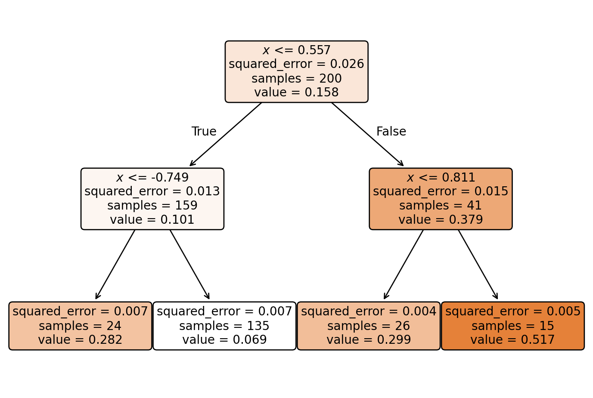
Unlike a classification tree, the leaves do not display class labels. Instead, every terminal node reports:
- the prediction, corresponding to the average target value of the training observations reaching that leaf;
- the impurity, measured by the Mean Squared Error (MSE);
- the number of training samples contained in the node.
Consequently, each leaf represents a region of the input space where all observations receive exactly the same prediction. A regression tree therefore approximates a continuous function using a collection of piecewise constant regions.
NoteImpurity in Regression Trees
In regression trees, impurity is measured using the Mean Squared Error (MSE) rather than the Gini index or entropy.
A split is considered beneficial when it substantially reduces the prediction error of the child nodes compared with their parent node. The training algorithm therefore searches for the split that maximizes the reduction in MSE at every stage of the tree construction.
Figure 6.10 compares the piecewise-constant predictions at depths two and three.
Show code
x_plot = np.linspace(-1, 1, 500).reshape(-1, 1)
fig, axes = plt.subplots(1, 2, figsize=(9.5, 4))
for model, depth, ax in zip(
[tree_reg_depth_2, tree_reg_depth_3],
[2, 3],
axes
):
predictions = model.predict(x_plot)
ax.scatter(X_reg[:, 0], y_reg, alpha=0.7)
ax.plot(x_plot[:, 0], predictions)
ax.set_title(f"max_depth = {depth}")
ax.set_xlabel("$x_1$")
ax.set_ylabel("$y$")
plt.tight_layout()
plt.show()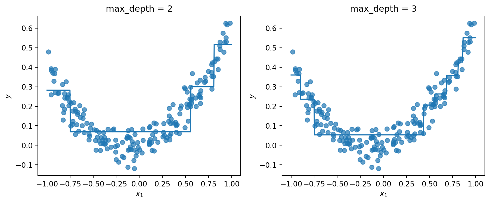
A regression tree partitions the predictor space into regions and returns a constant prediction within each region. Increasing the tree depth creates more and narrower intervals.
6.17 Regression splitting criterion
For regression, CART selects the feature and threshold minimizing the weighted child-node error. With squared error, the split objective can be written as
\[ J(j,t_j) = \frac{m_{\text{left}}}{m} \operatorname{MSE}_{\text{left}} + \frac{m_{\text{right}}}{m} \operatorname{MSE}_{\text{right}}. \]
For a leaf containing observations indexed by \(\mathcal{L}\), the prediction is
\[ \widehat{y}_{\mathcal{L}} = \frac{1}{|\mathcal{L}|} \sum_{i\in\mathcal{L}}y_i. \]
The within-leaf mean squared error is
\[ \operatorname{MSE}_{\mathcal{L}} = \frac{1}{|\mathcal{L}|} \sum_{i\in\mathcal{L}} \left( y_i-\widehat{y}_{\mathcal{L}} \right)^2. \]
6.18 Overfitting in regression trees
The same development-data principle applies to regression. The figure is descriptive, while train and cross-validated RMSE quantify the optimism of an unrestricted fit without consuming a final holdout.
Show code
unrestricted_reg = DecisionTreeRegressor(
random_state=42
)
regularized_reg = DecisionTreeRegressor(
min_samples_leaf=10,
random_state=42
)
_ = unrestricted_reg.fit(X_reg, y_reg)
_ = regularized_reg.fit(X_reg, y_reg)
fig, axes = plt.subplots(1, 2, figsize=(9.5, 4))
for model, title, ax in zip(
[unrestricted_reg, regularized_reg],
["Unrestricted tree", "min_samples_leaf = 10"],
axes
):
predictions = model.predict(x_plot)
ax.scatter(X_reg[:, 0], y_reg, alpha=0.7)
ax.plot(x_plot[:, 0], predictions)
ax.set_title(title)
ax.set_xlabel("$x_1$")
ax.set_ylabel("$y$")
plt.tight_layout()
plt.show()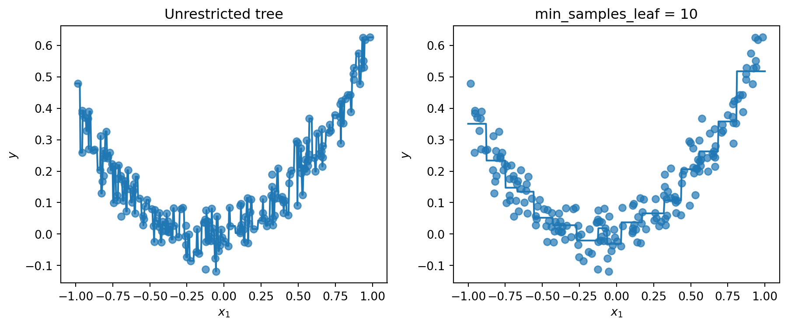
Figure 6.11 shows that the unrestricted model creates abrupt steps to match individual observations. Requiring larger leaves produces a smoother estimate.
regression_cv = KFold(n_splits=5, shuffle=True, random_state=42)
regression_rmse = {}
for name, model in {
"unrestricted": unrestricted_reg,
"regularized": regularized_reg
}.items():
scores = cross_validate(
model,
X_reg,
y_reg,
cv=regression_cv,
scoring="neg_mean_squared_error",
return_train_score=True,
n_jobs=1
)
regression_rmse[name] = {
"train_rmse": round(np.sqrt(-scores["train_score"]).mean(), 3),
"cv_rmse": round(np.sqrt(-scores["test_score"]).mean(), 3)
}
regression_rmse{'unrestricted': {'train_rmse': np.float64(0.0), 'cv_rmse': np.float64(0.076)},
'regularized': {'train_rmse': np.float64(0.055),
'cv_rmse': np.float64(0.066)}}The unrestricted tree’s much smaller training RMSE than cross-validated RMSE is direct evidence of overfitting. Candidate regression trees should be selected by cross-validated RMSE, not by the training curve.
6.19 Instability of Decision Trees
Decision Trees are high-variance estimators. Small changes in the training data may produce a different root split and a substantially different structure.
Show code
tree_a = DecisionTreeClassifier(
max_depth=5,
random_state=42
)
tree_b = DecisionTreeClassifier(
max_depth=5,
random_state=42
)
removed_index = 6
keep = np.arange(len(X_train)) != removed_index
_ = tree_a.fit(X_train, y_train)
_ = tree_b.fit(X_train[keep], y_train[keep])
x1, x2 = np.meshgrid(
np.linspace(X_moons[:, 0].min() - 0.3, X_moons[:, 0].max() + 0.3, 180),
np.linspace(X_moons[:, 1].min() - 0.3, X_moons[:, 1].max() + 0.3, 180)
)
comparison_grid = np.column_stack([x1.ravel(), x2.ravel()])
grid_disagreement = np.mean(
tree_a.predict(comparison_grid) != tree_b.predict(comparison_grid)
)
fig, axes = plt.subplots(1, 2, figsize=(9.5, 4))
for model, title, ax in zip(
[tree_a, tree_b],
["All training observations", "One observation removed"],
axes
):
DecisionBoundaryDisplay.from_estimator(
model,
comparison_grid,
response_method="predict",
plot_method="pcolormesh",
alpha=0.25,
ax=ax
)
ax.scatter(
X_train[y_train == 0, 0],
X_train[y_train == 0, 1],
marker="o"
)
ax.scatter(
X_train[y_train == 1, 0],
X_train[y_train == 1, 1],
marker="s"
)
ax.set_title(title)
ax.set_xlabel("$x_1$")
ax.set_ylabel("$x_2$")
plt.tight_layout()
plt.show()
print(f"Grid prediction disagreement: {grid_disagreement:.1%}")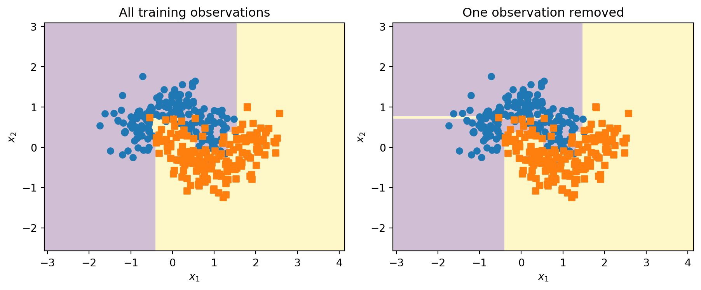
Grid prediction disagreement: 2.5%The models in Figure 6.12 differ by exactly one observation and use the same random_state; the printed disagreement is the fraction of a fixed dense grid assigned different classes. The selected observation is fixed for reproducibility, so this is an illustration rather than an unbiased estimate of instability. This sensitivity motivates ensemble methods, which aggregate many trees to reduce variance.
6.20 Decision Trees versus Extra Trees
An ordinary CART tree searches for the best threshold among candidate predictors at each node.
An Extra Tree introduces more randomness. It draws a random threshold for each candidate predictor and chooses the best of those randomized candidates. Random thresholds and feature subsampling can decorrelate trees in an ensemble, but for a single tree their bias and variance effects depend on signal, noise, sample size, and the chosen hyperparameters; they do not guarantee lower variance or better generalization (Scikit-learn developers 2025).
decision_tree = DecisionTreeClassifier(
max_depth=5,
random_state=42
)
extra_tree = ExtraTreeClassifier(
max_depth=5,
random_state=42
)
_ = decision_tree.fit(X_train, y_train)
_ = extra_tree.fit(X_train, y_train)Figure 6.13 illustrates one realization of each fitting rule; it is not a performance comparison.
Show code
fig, axes = plt.subplots(1, 2, figsize=(9.5, 4))
for model, title, ax in zip(
[decision_tree, extra_tree],
["Decision Tree", "Extra Tree"],
axes
):
DecisionBoundaryDisplay.from_estimator(
model,
X_train,
response_method="predict",
plot_method="pcolormesh",
alpha=0.25,
ax=ax
)
ax.scatter(
X_train[y_train == 0, 0],
X_train[y_train == 0, 1],
marker="o"
)
ax.scatter(
X_train[y_train == 1, 0],
X_train[y_train == 1, 1],
marker="s"
)
ax.set_title(title)
ax.set_xlabel("$x_1$")
ax.set_ylabel("$x_2$")
plt.tight_layout()
plt.show()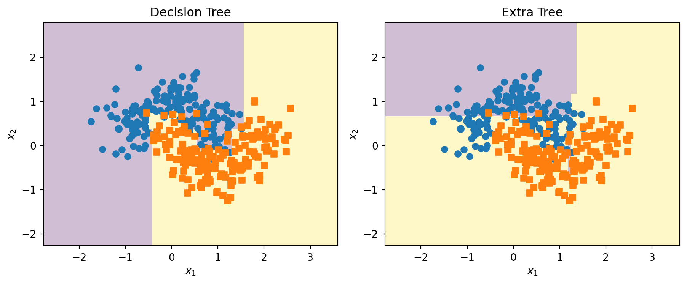
| Characteristic | Decision Tree | Extra Tree |
|---|---|---|
| Threshold selection | Searches candidate thresholds | Uses randomized thresholds |
| Randomness | Lower | Higher |
| Individual-tree bias | Data-dependent | Randomization may increase it, but the effect is data-dependent |
| Individual-tree variance | Data-dependent | Randomization changes it; reliable reduction mainly comes from aggregation |
| Main use | Standalone interpretation or ensembles | Usually ensembles |
| Ensemble counterpart | Random Forest | Extra Trees ensemble |
A single Extra Tree is not automatically better than a Decision Tree. Its main value appears when many randomized trees are aggregated.
NoteExtra Tree versus Extra Trees
ExtraTreeClassifier fits one randomized tree. ExtraTreesClassifier fits an ensemble of randomized trees. The variance-reduction advantage is primarily an ensemble effect.
6.21 Computational complexity
Training a balanced Decision Tree commonly requires approximately
\[ O(mn\log m), \]
where:
- \(m\) is the number of training observations;
- \(n\) is the number of predictors.
Prediction is fast because an observation follows only one path from root to leaf. For a balanced tree, prediction is approximately
\[ O(\log m). \]
However, an unbalanced tree may be much deeper and can have slower prediction.
6.22 Advantages of Decision Trees
Decision Trees have several important strengths:
- they are easy to visualize and explain;
- they naturally model nonlinear relationships;
- they capture interactions without explicit interaction terms;
- they require little numerical preprocessing;
- they work for classification and regression;
- they can handle multiclass problems directly;
- predictions are fast;
- they provide an interpretable sequence of decision rules.
6.23 Limitations of Decision Trees
Their main limitations include:
- high variance and instability;
- strong tendency to overfit;
- axis-aligned and piecewise-constant predictions;
- poor extrapolation in regression;
- possible bias in impurity-based feature importance;
- limited probability calibration;
- greedy optimization;
- often lower predictive performance than tree ensembles.
WarningNo reliable extrapolation
A regression tree predicts leaf averages. Outside the observed predictor range, it continues returning an existing leaf value rather than extending a trend.
6.24 Practical modeling workflow
A reliable workflow for Decision Trees is:
- create separate training and test sets;
- define a simple baseline tree;
- tune structural parameters with cross-validation;
- compare pre-pruning and cost-complexity pruning;
- evaluate training and validation performance together;
- inspect tree depth, leaf sizes, and class distributions;
- assess probability calibration when probabilities matter;
- reserve the test set for final evaluation;
- compare the single tree with ensemble alternatives.
In this chapter, final_tree is the candidate actually selected by five-fold cross-validation and refitted before the single final evaluation. It is not an arbitrary, unfitted specification.
6.25 Practical checklist
- Keep the test partition locked until all modeling choices are complete.
- Cross-validate preprocessing and tree complexity together in a pipeline.
- Compare train and fold metrics to diagnose overfitting; report RMSE for regression.
- Inspect weighted node mass, leaf probabilities, ties, depth, and minimum leaf size.
- Use held-out permutation importance alongside MDI and state correlation and sampling caveats.
- Refit the selected specification on all development data, evaluate once, and document the selection rule.
6.26 Common mistakes
WarningLeaving the tree unrestricted
A fully grown tree often memorizes the training sample. Always evaluate regularization or pruning.
WarningSelecting complexity from training accuracy
Training accuracy generally improves as the tree grows. Complexity must be selected using validation or cross-validation.
WarningTreating feature importance as causality
A high impurity-based importance does not imply that a predictor causes the outcome.
WarningAssuming stable interpretation
A visually simple tree may change substantially after a small change in the training sample.
WarningIgnoring class imbalance
A tree trained on imbalanced classes may favor the majority class. Consider suitable metrics, class_weight, resampling, and leaf-level class counts.
6.27 Chapter summary
Decision Trees recursively partition the feature space using simple threshold rules. Classification trees predict classes and class proportions, while regression trees predict leaf averages.
CART grows binary trees greedily by selecting splits that minimize sample-mass-weighted impurity or prediction error. Gini impurity and entropy are common classification criteria, while squared error is frequently used for regression.
Unrestricted trees have low bias but high variance and often overfit. Their complexity can be controlled using depth limits, minimum node sizes, leaf-size restrictions, impurity thresholds, maximum leaf counts, and cost-complexity pruning.
Decision Trees are interpretable and do not need scaling, but categoricals, missing values, and leakage-safe preprocessing still matter. Trees are unstable and often less accurate than ensembles; Random Forests and Extra Trees seek variance reduction by combining diverse trees. Complexity must be chosen with training-only validation, followed by one final test evaluation.
6.28 Exercises
Fit Decision Trees with
max_depthranging from 1 to 10 on the moons dataset. Plot training and validation accuracy against depth.Compare Gini impurity and entropy on the Iris dataset. Examine whether the resulting structures and predictions differ.
Fit a tree with several values of
min_samples_leaf. Explain how this parameter changes the decision boundary.Use
cost_complexity_pruning_path()and cross-validation to selectccp_alpha.Compare impurity-based importance with permutation importance computed on a held-out partition. Explain the effects of correlated predictors and repeat variability.
Generate a nonlinear regression dataset and compare an unrestricted tree with trees regularized by
max_depthandmin_samples_leaf. Report train and cross-validated RMSE.Remove one training observation, refit with the same
random_state, and quantify prediction disagreement on a fixed grid or validation set.Compare
DecisionTreeClassifier,ExtraTreeClassifier, and an ensemble of Extra Trees on the same dataset.Explain why a regression tree cannot reliably extrapolate beyond the training range.
Investigate how
class_weight="balanced"affects a Decision Tree on an imbalanced classification problem.Build a leakage-safe pipeline for mixed numeric and categorical predictors with missing values, and cross-validate the complete pipeline.